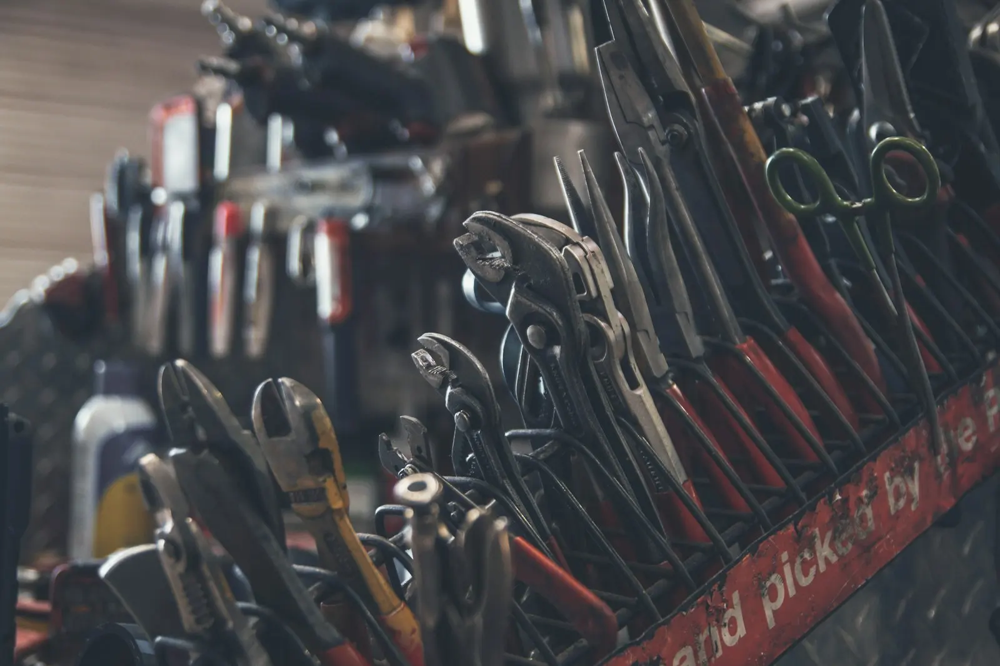

Leaks and drips
Finding and fixing leaks, including awkward ones.
SALFORD & GREATER MANCHESTER
One local tradesman for plumbing repairs, carpentry, decorating and general fixes. Call or WhatsApp with the job.

Illustrative photoPublished on the Nextdoor business page.
Neighbourhood Favourite on Nextdoor in 5 neighbourhoods, across Bury and Manchester.
WHAT NEEDS FIXING?
Finding and fixing leaks, including awkward ones.
Tap repairs, cistern and flush problems.
Drain problems and repairs.
Shelving put up properly, level and secure.
Hanging and repairing doors, fencing work.
Flooring jobs and repairs.
Fresh paint and tidy finishes.
The little jobs that add up. Send the list.
Services as listed on the public Nextdoor page: plumbing (leaks, taps, drains and repairs), carpentry (shelves, fences, doors, flooring), painting and decorating, general repairs.
SHARED ON THEIR NEXTDOOR PAGE
"Access through the ceiling wasn't possible, so I took the alternative route through the floor to reach the problem and get it sorted properly."
Posted on Nextdoor, 27 OctNew fill valve and flush valve in the cistern, new waste pan connector, new water supply pipe. "Leak checked, sealed and fully tested."
Posted on Nextdoor, 30 OctA ceiling leak traced, an under-sink leak located and repaired, and a toilet that would not stop running fixed.
Posted on Nextdoor, about 6 NovThese are the business's own posts, not customer reviews. Photos on this page are illustrative only. Illustrative photos from Unsplash.
NO JOB TOO AWKWARD
Plumbing, carpentry and decorating from one number means fewer people to chase. Tell JP everything that needs doing and ask what can be done in one visit.
BOOK A JOB
This form writes a WhatsApp message to +44 7889 702820. You review it and press send yourself. Nothing is stored or sent from this page.
+44 7889 702820jprepairsmaintenance@gmail.comSalford, serving Greater Manchester